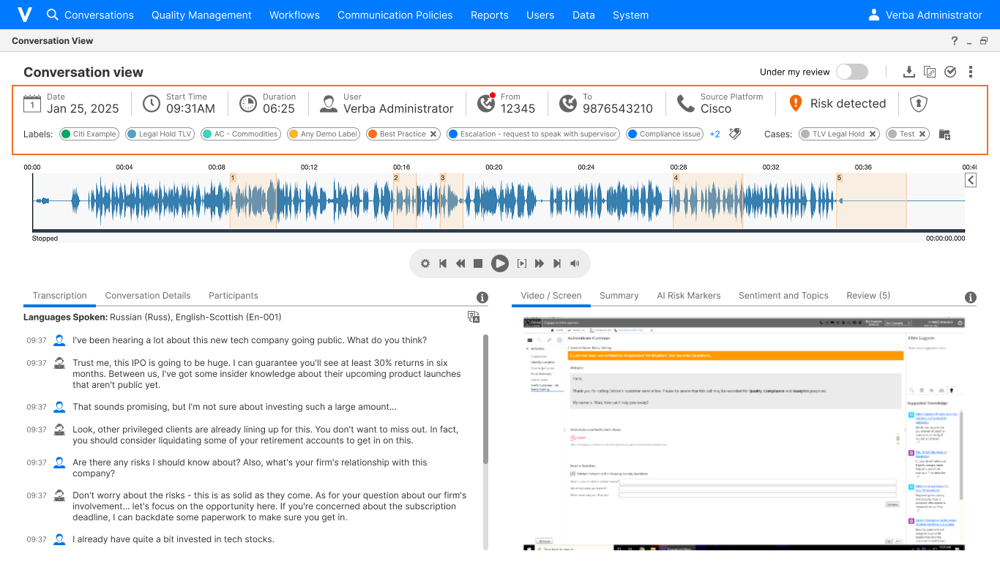
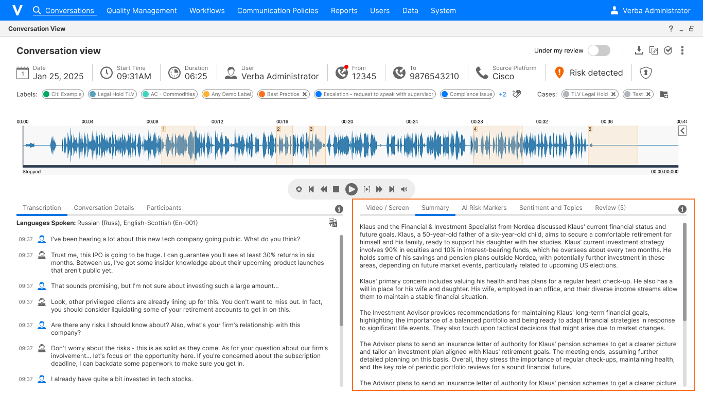
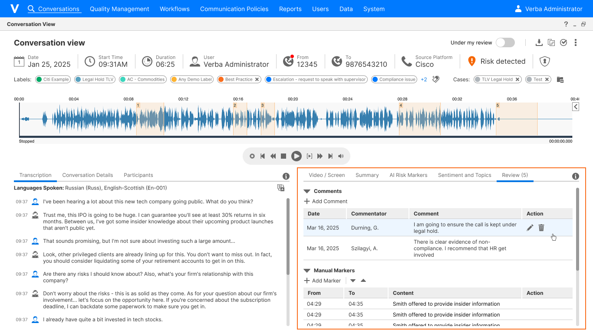
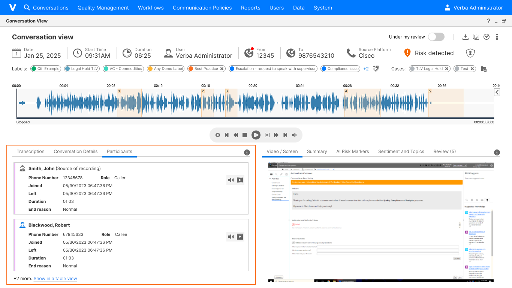

Compliance App
Modernizing a compliance review platform and introducing AI-powered risk detection — so compliance teams could go from sampling a fraction of calls to reviewing what actually matters.
Overview
This project balanced two parallel efforts: a UI modernization that brought the experience closer to Verint's evolving design system within real technical constraints, and the design of an entirely new AI-powered risk detection capability — built to serve three distinct personas, from IT administrators and Compliance Officers to Wealth Management Supervisors, each with a different relationship to the product.

The Problem
The Compliance App had been running on the same UX foundation for nearly seven years. The interface had grown difficult to navigate, and the visual design was out of step with Verint's evolving LUX design system. At the same time, the product was preparing to launch a significant new capability: AI-powered risk detection (VFC Bots) that would automatically flag compliance risks in call recordings.
The work split into two parallel streams. The first was a focused UI refresh. The existing technical infrastructure ruled out a full migration to Verint's new LUX design system, so the work focused on bringing the experience as close to a LUX look and feel as possible, while resolving accumulated usability debt. The second was a new design challenge: surfacing AI-generated risk signals in a way that compliance reviewers could act on quickly, without overwhelming them or undermining their trust in the AI.
Understanding the Needs
The starting point was auditing the existing product. Dense waveforms, utilitarian tables, and analytics panels bolted on over time made even core tasks, like reviewing a call's participants or adding a marker, feel more effortful than they needed to be.


Three distinct user personas shaped the design, each with fundamentally different relationships to the product:
- IT administrators — responsible for locating specific call recordings, often spending hours searching before they could hand a call off to the compliance team. Search and filtering were their primary pain point.
- Compliance Officers — a largely untapped user base who rarely logged into VFC at all, relying on IT to export calls for them instead. A core goal was to give them enough reason to log in directly and engage with the product regularly — getting up to speed quickly, listening to the relevant section of a recording, annotating their findings, and moving on, without context-switching to other tools.
- Wealth Management Supervisors — had historically relied on manual sampling: pulling a small number of calls into Excel spreadsheets each week and reviewing them by hand. The AI integration was a direct replacement for this workflow, and the design had to earn their trust in the system's triage decisions.
Two specific pain points emerged from the audit:
- Buried orientation data — the key questions a reviewer needs answered the moment they open a call — who was on it, what type of interaction it was, was it flagged for risk, when it occurred, and how it was handled — were scattered across tabs and pop-ups. Getting a basic picture required multiple clicks before review could even begin.
- No AI assistance anywhere in the system — neither the search grid nor the interaction page had any intelligence layer. Reviewers had no way to identify high-risk moments without listening to the full recording.
Rather than redesigning the system from the ground up, the challenge was to identify where targeted design changes could have the greatest impact. Within the existing technical and structural framework, I focused on improving clarity, consistency, and usability while preserving familiar workflows and integrating new AI capabilities without overwhelming users.
Ideation & Design
This LUX-inspired refresh tackled interaction patterns, component consistency, and visual hierarchy across the existing screens, within the limits of what the underlying technical infrastructure could support. The two core usability problems required more deliberate solutions.
The first priority was immediate orientation. The redesigned interaction page surfaces key metadata the moment it opens — date, time, duration, user, source and destination numbers, and platform — shown as labeled icons across the top of the screen and readable before pressing play. Associated labels and case links appear just below. Information that had been scattered across the page was reorganized into clearly structured tabs, with the tabs themselves repositioned and reordered for a more logical flow. A prominent "Has Risk" indicator at the top of the interaction page gives reviewers an immediate signal before the recording starts.

An AI Summary tab was also added, giving reviewers a plain-language summary of the call generated directly from its transcription.

Another use of AI was in automating risk markers. In the legacy system, markers on the call timeline had to be placed manually by the compliance officer while reviewing a call. In the new design, the AI does this automatically: a dedicated AI Markers tab lists every risk marker the AI detected, including the specific content that triggered it — a transcript excerpt, a detected topic, a flagged phrase. These markers are also shown directly on the call timeline, letting compliance officers see the density and location of flagged moments at a glance without any manual work.

A dedicated Review tab was added to the interaction page, letting officers add their own comments and risk markers without navigating away from the call.

The participants tab gives compliance officers an immediate overview of who was on a call — a critical first step in any compliance investigation.

Participant join and leave events are shown directly on the call timeline, giving compliance officers a clear picture of who was present at any given moment in the recording.


The search grid also received a visual refresh, though not through new screens: I provided UX direction directly on the existing screens, and a UI designer translated that into detailed specs for developers — so that work isn't shown here.
Outcome & Impact
Feedback from users has been overwhelmingly positive.
From a design and commercial standpoint, the response from sales channels has been strong. The old UI had become a barrier to sale — visually dated and out of step with what buyers expect from a modern product. The redesigned interface is now used in marketing materials and is the screen the demo team opens on at trade shows and events.
From a user standpoint, the redesign hit the problem areas directly. Reviewers can now immediately see who was on a call, what devices they communicated on, and when it took place. For licensed users, AI summaries answer what the call was about, and the Conduct Risk indicator flags whether it's worth a closer look. Across the board, it's a marked improvement over the legacy experience.
On scale: before the AI integration, compliance teams were reviewing a small random sample — less than a tenth of a percent of calls. With AI triage surfacing the interactions most likely to contain risk, teams can now focus where it matters, moving compliance coverage closer to the full call volume rather than a fixed sample.